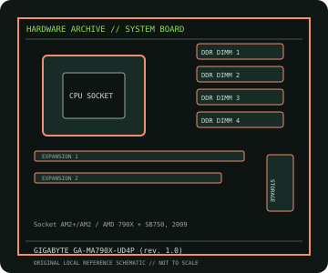

[ INDIVIDUAL COMPONENT // MOTHERBOARDS ]
GIGABYTE GA-MA790X-UD4P (rev. 1.0)
GA-MA790X-UD4P (rev. 1.0): Socket AM2+/AM2 / AMD 790X + SB750, 2009; revision-aware Socket motherboard specifications, CPU/BIOS qualification, board size, memory, expansion, storage and I/O.

IDENTIFICATION: PCB revision 1.0. Confirm the exact silkscreen, revision and firmware on the physical board; near-name variants can use different BIOS files and connectors.
Specifications
| Catalog subcategory | AMD Socket platforms |
|---|---|
| Exact board / model | GA-MA790X-UD4P (rev. 1.0) — PCB revision 1.0 |
| Platform and chipset | Socket AM2+/AM2 / AMD 790X + SB750, 2009; AMD 790X northbridge with SB750 southbridge. |
| CPU and BIOS support | AM2+/AM2; GIGABYTE CPU table lists supported Phenom II/Phenom/Athlon/Sempron models and required BIOS versions, including later Phenom II support. |
| Memory | Four DDR2 DIMM sockets, dual-channel, up to 16 GB; DDR2 1066/800/667 with CPU qualification and overclocked rates noted separately by GIGABYTE. |
| Board size / form factor | ATX, 305 × 244 mm. |
| Expansion and storage | Two PCIe 2.0 x16 slots with CrossFireX support, three PCIe x1 and two PCI; six SB750 SATA 3 Gb/s ports plus two GIGABYTE SATA ports and one PATA connector. |
| Rear I/O and compatibility | Rear USB 2.0, dual Gigabit Ethernet, IEEE 1394, 8-channel audio, PS/2, parallel/serial and S/PDIF; no integrated graphics output. Use DDR2 (not DDR3) and a discrete PCIe graphics card. Check revision 1.0 CPU/BIOS table and the manual for PCIe lane mode, SATA controllers, 140 W CPU limits and memory population. |
Compatibility and revision notes
Use DDR2 (not DDR3) and a discrete PCIe graphics card. Check revision 1.0 CPU/BIOS table and the manual for PCIe lane mode, SATA controllers, 140 W CPU limits and memory population.
Before installation, compare the physical board and revision against the manufacturer manual. Check socket condition, CPU power requirements, cooler/chassis clearance, DIMM population order, power connectors and any shared PCIe or SATA lanes. Update firmware only with the exact model’s supported procedure.
Preservation and repair
Record the PCB revision, BIOS identifier, serial/date code, installed CPU and memory, accessories, known faults, repairs and test conditions. Use ESD-safe handling and inspect for socket damage, corrosion, leaking capacitors and loose conductive hardware before power-up.
Sources & further reading
- GIGABYTE GA-MA790X-UD4P (rev. 1.0) specificationsManufacturer specifications for this exact PCB revision.
- GIGABYTE GA-MA790X-UD4P (rev. 1.0) supportManufacturer CPU/BIOS list, downloads and user manual for revision 1.0.
Manufacturer documentation is authoritative for supported CPUs, minimum BIOS, memory qualification and revision-specific wiring. Do not transfer compatibility claims or firmware between similar model names.